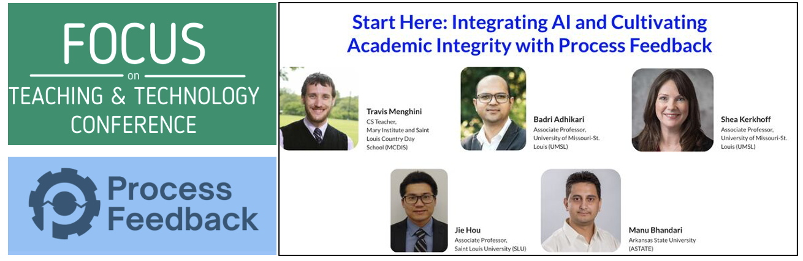
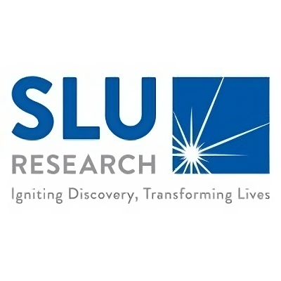
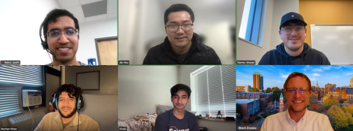

About Me
I am a tenure-track Assistant Professor in the Department of Computational Mathematics, Science and Engineering (CMSE) at Michigan State University (MSU). Prior to joining MSU, I was an Associate Professor in the Department of Computer Science at Saint Louis University. I received my M.A. in Statistics in 2014, and a Ph.D. in Computer Science in 2019 from the University of Missouri-Columbia.
The research in my lab focuses on developing data-driven computational methods (particularly machine learning, deep learning, and computational optimization methods) to address the fundamental problems in biological sciences, including protein/RNA structure prediction, molecular interactions (i.e., protein-protein complex, protein-RNA contacts) and quality assessment of molecular structure predictions. We are also actively participating in collaborative projects in healthcare, privacy-preserving ML, and omics data analysis. @Google Scholar / @Curriculum Vitae
Research Interests
Protein/RNA Structure Prediction
Read MoreProtein Quality Assessment
Read MoreOmics data analysis & Deep Learning
Privacy-Preserving Machine Learning
Read MoreSelected Education Activities
I am also dedicated to advancing AI in education (AI4Ed) by integrating innovative technologies such as ProcessFeedback and AI-driven tools (LLMs) into computational learning. I enjoy exploring diverse approaches that enhance student engagement and promote interactive learning in both classrooms and research training. My work spans undergraduate/graduate AI research initiatives, innovative teaching methodologies, and contributions to major bioinformatics and CS education conferences.
| 1. Tutorial on AI in Education (AI4Ed) on ACM-SIGCSE 2025
Adhikari, Badri, and Jie Hou. "Teaching Coding in the Age of AI: A Hands-on Tutorial on Process Feedback." Proceedings of the 56th ACM Technical Symposium on Computer Science Education V. 2. 2025.
see Full Paper | Workshop Materials
|
|
| 2. Student Engagement Strategies Panel: SLU representative at Focus on Teaching and Technology Conference (FTTC) 2024
Topic: "Enhance Engagement and Learning: Integrating ProcessFeedback in Classroom"

|
Honors and Awards
| 1. 2024, School of Science & Engineering Faculty and Staff Excellence in Teaching Award, Saint Louis University |
| 2. 2019, Outstanding PhD Student Award in the College of Engineering, University of Missouri |
Active/Completed Grants
1. NIH/NIGMS, R15 (Active, Principal-Investigator), “Improving Artificial Intelligence Readiness of RNA Motif Data for Structure Analysis and Modeling,” 09/2024 – 08/2027. Project Number: 1R15GM155891-01
Major Goals: Our goal is to enhance computational RNA structural analysis by integrating artificial intelligence (AI) and developing a comprehensive RNA data generation framework tailored for AI applications. |
|
2. NIH/NIGMS, R15 (Active, co-Investigator), “Understanding the Thermodynamics and Structure of RNA Secondary Structure Motifs,” 07/2025 – 06/2028. (PI: Dr. Brent Znosko, SLU-Chemistry). Project Number: 2R15GM085699-05
Major Goals: The project aims to improve RNA secondary and 3D structure prediction by deriving updated thermodynamic parameters for common and modified RNA motifs and enhancing computational tools for structural analysis.
|
|
3. NIH/NHLBI, R01 (Active, co-Investigator), “Pharmacogenetic Refinement of the Warfarin Dose Using Machine Learning,” 07/2024 – 06/2028. (PI: Dr. Gage Brian at School of Medicine, WUSTL). Project Number: 1R01HL173734-01
Major Goals: Our goal is to improve the safety and effectiveness of anticoagulant therapy. We will use penalized regression and machine learning to develop algorithms to guide warfarin dosing. To facilitate use of the algorithms, we will integrate them into a popular electronic health record (Epic) and make them publicly available at our non-profit web application, www.WarfarinDosing.org
|

|
4. NSF (Active, co-PI), “CC* Compute-Campus: Modernizing Campus Cyberinfrastructure for AI-Enhanced Research and Education (ModernCARE),” 11/2024 – 10/2026. (PI: Ted Ahn at SLU-CS). Project Number: 2430236
Major Goals: This project aims to enhance SLU's campus computing infrastructure equipment (a brand-new, small-scale, university-wide, GPU-based cluster) to support advanced AI-driven research and educational activities that will benefit our faculty, students, and broader scientific community.
|

|
5. SLU Scholarly Undergraduate Research Grants and Experiences (SURGE) Program
a. (PI, Active) “AI agent for automated RNA motif analysis using open-source large language models (LLMs),” 08/2025 – 06/2026. Job Details: https://slu.joinhandshake.com/jobs/9741688/share_previewb. (PI, Completed) “Automated RNA Motif Structure Parsing Framework for AI/ML applications,” 08/2024 – 12/2024c. (PI, Completed) “Computational algorithms for binding affinity between antibodies and antigens,” 05/2023 – 09/2023 |
 |
6. SLU Foundational Interdisciplinary Research Experience (FIRE) grant
a. (PI, active) “Advancing RNA Motif Structural Analysis with a Fully Automated AI Agent,” 01/2025 – 12/2026Check out our work in 2025 SSE Undergraduate Student Showcase: @AutoRNA |
Research
Complete List of Published Work in MyBibliography: Publication total = 57; H-index = 24 (=22 since 2019),@Google Scholar
Data-assisted protein/RNA structure prediction
Data-restrained structural modeling based on experimental information has attracted new attention. Solutions to such problems are still under development. The use of experimental restraints, such as cross-linking/mass spectrometry, small-angle x-ray scattering (SAXS) and single-particle cryo-electron microscopy (cryo-EM) have emerged and are considered a promising direction in structural modeling improvement.
My research interest focuses on developing computational methods (i.e. deep learning, machine learning, optimization techniques) to determine the optimal ways to fully leverage the experimental information from SAXS/Cryo-EM in protein/RNA structure modeling.
- Chen, J., Zia, A., Hou, J., Wang, F., Cao, R., & Si, D. (2023). Protein Structure Refinement via DeepTracer and AlphaFold2. bioRxiv, 2023-08. (accepted in Briefings in Bioinformatics)(Link)
- Nakamura, A., Meng, H., Zhao, M., Wang, F., Hou, J., Cao, R., & Si, D. (2023). Fast and automated protein-DNA/RNA macromolecular complex modeling from cryo-EM maps. Briefings in Bioinformatics, 24(2), bbac632.(Link)
- Si, D., Nakamura, A., Tang, R., Guan, H., Hou, J., Firozi, A., ... & Zhao, M. (2022). Artificial intelligence advances for de novo molecular structure modeling in cryo‐electron microscopy. Wiley Interdisciplinary Reviews: Computational Molecular Science, 12(2), e1542. (Link)
- Hou, J., Adhikari, B., Tanner, J. J., & Cheng, J. (2020). SAXSDom: Modeling multidomain protein structures using small-angle X-ray scattering data. Proteins: Structure, Function, and Bioinformatics, 88(6), 775-787. PMID: 31860156(Link)
- Hou, J., Wu, T., Cao, R., & Cheng, J. (2019). Protein tertiary structure modeling driven by deep learning and contact distance prediction in CASP13. Proteins: Structure, Function, and Bioinformatics, 87(12), 1165-1178. PMID: 30985027 (Link)
Protein Quality Prediction using Deep Learning
Protein quality assessment (QA) plays an important role in protein structure prediction, which evaluates the quality of a protein model without knowing its true structure. My research interest focuses on developing deep-learning based model QA methods to explore potential solutions for improving the accuracy of model quality assessment, incuding integrating multiple QA methods and residue-residue contact/distance predictions.
- Zhang, L., Wang, S., Hou, J., Si, D., Zhu, J., & Cao, R. (2023). ComplexQA: A deep graph learning approach for protein complex structure assessment. Briefings in Bioinformatics, 24(6), bbad287.(Link)
- Rahbar, M., Chauhan, R. K., Shah, P. N., Cao, R., Si, D., & Hou, J. (2022, August). Deep graph learning to estimate protein model quality using structural constraints from multiple sequence alignments. In Proceedings of the 13th ACM International Conference on Bioinformatics, Computational Biology and Health Informatics (pp. 1-10). (Link)
- Hou, J., Wu, T., Cao, R., & Cheng, J. (2019). Protein tertiary structure modeling driven by deep learning and contact distance prediction in CASP13. Proteins: Structure, Function, and Bioinformatics, 87(12), 1165-1178. PMID: 30985027 (Link)
- Cheng, J., Choe, M. H., Elofsson, A., Han, K. S.,Hou, J., Maghrabi, A. H., ... & Studer, G. (2019). Estimation of model accuracy in CASP13. Proteins: Structure, Function, and Bioinformatics, 87(12), 1361-1377.(Link)
News
- 01/2026. Professional development: Dr. Hou joined Department of CMSE at MSU as tenure-track assistant professor.
- 07/2025. Research Funding: Dr. Hou (co-I) received a three-year grant from the National Institute of Health (NIH/NIGMS) for project titled "Understanding the Thermodynamics and Structure of RNA Secondary Structure Motifs". (Project Number: 2R15GM085699-05)
- 05/2025. Professional development: Dr. Jie Hou has been promoted to the rank of Associate Professor with tenure, effective July 1, 2025.
- 03/2025. Research Funding: Dr. Hou (PI) received an one-year grant from SLU Scholarly Undergraduate Research Grants and Experiences (SURGE) to develop AI-agent and LLMs for automated RNA structural analysis and modeling (See Fund Details)
- 02/2025. Education Publication: Honored to be co-authored in ACM-SIGCSE 2025 (largest conference for CS education) tutorial session “Teaching Coding in the Age of AI”. See (See Full Paper and Workshop materials)
- 01/2025. Research Funding: Dr. Hou (PI) received a 6-semester grant from SLU Foundational Interdisciplinary Research Experience (FIRE) program to involve undergraduate students in research of developing AI agent for automated RNA structural analysis with large language model.
- 11/2024. Research Funding: Dr. Hou (co-PI) received a two-year grant from the National Science Foundation (NSF) for project titled "CC* Compute-Campus: Modernizing Campus Cyberinfrastructure for AI-Enhanced Research and Education (ModernCARE)". (Project Number: 2430236 )
- 09/2024. Research Funding: Dr. Hou (PI) received a three-year grant from the National Institute of Health (NIH/NIGMS) for project titled "Improving Artificial Intelligence Readiness of RNA Motif Data for Structure Analysis and Modeling". (Project Number: 1R15GM155891-01 )
- 08/2024. Conference Paper: Our research paper, titled 'Exploring the efficiency of deep graph neural networks for rna secondary structure prediction' is accepted for oral presentation in International Conference on Intelligent Biology and Medicine (ICIBM 2024), and recommended for journal submission. Congratulations to the team.
- 07/2024. Research Funding: Dr. Hou (co-I) received a subaward for a four-year NIH-R01 grant from the National Institute of Health (NIH/NHLBI) to develop machine learning methods for Pharmacogenetic Refinement of the Warfarin Dose. PI: Dr. Gage Brian at WUSTL. (Project Number: 1R01HL173734-01)
- 06/2024. Research Funding: Dr. Hou received funds from the SLU Scholarly Undergraduate Research Grants and Experiences (SURGE) Program to support one undergraduate student to work on RNA structure analysis in Academic Year 2024-2025
- 05/2024. College Award: Dr. Hou received the SSE Faculty and Staff Excellence in Teaching Award in the School of Science and Engineering (SSE) at SLU!
- 05/2024. Research Appointment: Dr. Hou accepted a secondary appointment in Department of Health and Clinical Outcomes Research (HCOR) in School of Medicine at SLU!
- 03/2024. Student Supervision: Congratulations to my student, Omkar Datta Sowri Vullaganti, got accepted to Student Research Experience Program at Midwest Research Computing and Data Consortium and received travel support & stipend!
- 03/2024. Student Supervision: Congratulations to my student, Vinay Chaudhari, got accepted to Student Research Experience Program at Midwest Research Computing and Data Consortium and received travel support & stipend!
- 03/2024. Student Supervision: Vinay Chaudhari joined our lab as graduate research assistant. Welcome!
- 02/2024. Student Supervision: Congratulations to my graduate student (SLU BCB program), Charlz Nithin Jerold, for officially accepting a full-time job offer to be a Bioinformatics Research Analyst at Washington University at St. Louis.
- 11/8/2023. Research Presentation: Dr. Hou gave a talk in Barnes-Jewish Hospital, Saint Louis for topic of ”Machine Learning applications in healthcare” (Guest lecture)
- 11/07/2023. Student Supervision: BCB student student: Abdur Rahman Syed Ali joined our lab. Welcome!
- 10/13/2023. Research Presentation: Dr. Hou gave a talk in 2023 AI for Medicine conference for topic of ”AI and big data analytics in healthcare data”
- 09/20/2023. Research Presentation: Dr. Hou gave a talk in 2023 SLU Computer Science Colloquium for topic of ”The applications of deep learning techniques in protein structure prediction”
- 08/09/2023. Research Presentation: Dr. Hou gave a talk in 2023 SIGKDD conference, BioKDD workshop to present the full paper about our recent work focusing on ”AnglesRefine: refinement of 3D protein structures using Transformer based on torsion angles”, in Long Beach
- 08/2023. University Service: Dr. Hou started to serve as Curriculum Committee Chair of SLU School of Science and Engineering (SSE)
- 03/2023: Conference Service: Dr. Hou started to serve as workshop co-chair of BioKDD 2023 workshop
- 8/2022. Student Presentation: Mahdi presented the full paper about our recent work focusing on 'deep graph learning approach in ranking protein structure prediction' was accepted in ACM-BCB 2022
- 7/11/2022. Poster Presentation: Dr. Hou presented the poster about our recent work focusing on 'deep learning approach in ranking protein-protein complex' in ISMB 2022
- 6/2022. Research Paper: Our full paper titled 'Deep graph learning to estimate protein model quality using structural constraints from multiple sequence alignments' has been accepted to ACM-BCB 2022
- 6/2022. Research Abstract: Our abstract of 'deep learning approach in ranking protein-protein complex' was accepted in 2022 International Conference on Intelligent Systems for Molecular Biology (ISMB)
- 5/2022. Research Funding: Dr. Hou received a research grant from Saint Louis University (PRF) to conduct the privacy analysis of distributed learning with defensive Measure(Co-PI role, 5/2022–04/2023)
- 4/29/2022. University Service: Dr. Hou served as Judge in SLU GSA Research Symposium
- 4/1/2022. University Service: Dr. Hou served as Moderator in SLU Sigma Xi Symposium
- 12/2021. Research Funding: Dr. Hou received a research grant from WUSTL (ICTS/CTRFP) to develop machine learning algorithms for Pharmacogenetic Refinement of Warfarin Dose (Co-PI role, 3/2022–02/2023)
- 3/2021. Research Funding: Dr. Hou received a research grant from Saint Louis University (PRF) to develop deep learning algorithms for protein structure prediction (PI role, 5/2021–11/2022)
- 9/2019. The Hou lab started at SLU CS department and BCB program
Teaching
- BCB 5930: Advanced Machine Learning for Bioinformatics(Spring 2025)
- BCB 5300: Algorithms in Computational Biology(Fall 2021/2022/2023/2024)
- CSCI 1020: Introduction to Computer Science: Bioinformatics(Fall 2019/2020, Spring 2020/2021)
- CSCI 4750/5750: Machine Learning(Spring 2020/2023/2024/2025, Fall 2020/2021/2022/2023/2024 )
People
Current Graduate Students
Current Undergraduate Students
Current High-school Students
Former Students
Former High-school Students
Publication
Complete List of Published Work in MyBibliography: Publication total = 57; H-index = 24 (=22 since 2019)
@Google Scholar
- Nakamura, A., Meng, H., Zhao, M., Wang, F., Hou, J., Cao, R., & Si, D. (2023). Fast and automated protein-DNA/RNA macromolecular complex modeling from cryo-EM maps. Briefings in Bioinformatics, 24(2), bbac632.
- Zhang, L., Zhu, J., Wang, S., Hou, J., Si, D., & Cao, R. (2023). AnglesRefine: refinement of 3D protein structures using Transformer based on torsion angles. bioRxiv, 2023-07.
- Chen, J., Zia, A., Hou, J., Wang, F., Cao, R., & Si, D. (2023). Protein Structure Refinement via DeepTracer and AlphaFold2. bioRxiv, 2023-08.
- Rahbar, Mahdi; Chauhan, Rahul Kumar; Shah, Pankil Nimeshbhai; Cao, Renzhi; Si, Dong; Hou, Jie; Deep graph learning to estimate protein model quality using structural constraints from multiple sequence alignments,Proceedings of the 13th ACM International Conference on Bioinformatics, Computational Biology and Health Informatics,,,1-10,2022
- Hippe, Kyle; Lilley, Cade; William Berkenpas, Joshua; Chandana Pocha, Ciri; Kishaba, Kiyomi; Ding, Hui; Hou, Jie; Si, Dong; Cao, Renzhi; ZoomQA: residue-level protein model accuracy estimation with machine learning on sequential and 3D structural features,Briefings in bioinformatics,23,1,bbab384,2022,Oxford University Press
- Si, Dong; Nakamura, Andrew; Tang, Runbang; Guan, Haowen; Hou, Jie; Firozi, Ammaar; Cao, Renzhi; Hippe, Kyle; Zhao, Minglei; Artificial intelligence advances for de novo molecular structure modeling in cryo‐electron microscopy,Wiley Interdisciplinary Reviews: Computational Molecular Science,12,2,e1542,2022,Wiley Periodicals, Inc. Hoboken, USA
- Liu, Jian; Wu, Tianqi; Guo, Zhiye; Hou, Jie; Cheng, Jianlin; Improving protein tertiary structure prediction by deep learning and distance prediction in CASP14,Proteins: Structure, Function, and Bioinformatics,90,1,58-72,2022,John Wiley & Sons, Inc. Hoboken, USA
- Chen, Xiao; Liu, Jian; Guo, Zhiye; Wu, Tianqi; Hou, Jie; Cheng, Jianlin; Protein model accuracy estimation empowered by deep learning and inter-residue distance prediction in CASP14,Scientific Reports,11,1,1-12,2021,Nature Publishing Group
- Guo, Zhiye; Wu, Tianqi; Liu, Jian; Hou, Jie; Cheng, Jianlin; Improving deep learning-based protein distance prediction in CASP14,Bioinformatics,37,19,3190-3196,2021,Oxford University Press
- Lawson, Catherine L; Kryshtafovych, Andriy; Adams, Paul D; Afonine, Pavel V; Baker, Matthew L; Barad, Benjamin A; Bond, Paul; Burnley, Tom; Cao, Renzhi; Cheng, Jianlin; Cryo-EM model validation recommendations based on outcomes of the 2019 EMDataResource challenge,Nature methods,18,2,156-164,2021,Nature Publishing Group
- Wu, Tianqi; Guo, Zhiye; Hou, Jie; Cheng, Jianlin; DeepDist: real-value inter-residue distance prediction with deep residual convolutional network,BMC bioinformatics,22,1,1-17,2021,Springer
- Adhikari, Badri; Shrestha, Bikash; Bernardini, Matthew; Hou, Jie; Lea, Jamie; DISTEVAL: A web server for evaluating predicted protein distances,BMC bioinformatics,22,1,1-9,2021,BioMed Central
- Chen, Chen; Hou, Jie; Shi, Xiaowen; Yang, Hua; Birchler, James A; Cheng, Jianlin; DeepGRN: prediction of transcription factor binding site across cell-types using attention-based deep neural networks,BMC bioinformatics,22,1,1-18,2021,BioMed Central
- Wu, Tianqi; Guo, Zhiye; Hou, Jie; Cheng, Jianlin; DeepDist: real-value inter-residue distance prediction with deep residual convolutional network,BMC bioinformatics,22,1,1-17,2021,BioMed Central
- Guo, Zhiye; Hou, Jie; Cheng, Jianlin; DNSS2: improved ab initio protein secondary structure prediction using advanced deep learning architectures,Proteins: Structure, Function, and Bioinformatics,89,2,207-217,2021,John Wiley & Sons, Inc. Hoboken, USA
- Lawson, C. L., Kryshtafovych, A., Adams, P. D., Afonine, P., Baker, M. L., Barad, B. A., ..., Chiu, W. Outcomes of the 2019 EMDataResource model challenge: validation of cryo-EM models at near-atomic resolution. Nature Methods, accepted, 2020.
- Hou J, Adhikari B, Tanner JJ, Cheng J. SAXSDom: Modeling multidomain protein structures using small-angle X-ray scattering data. Proteins. 2020 Jun;88(6):775-787. doi: 10.1002/prot.25865. Epub 2019 Dec 27. PMID: 31860156; PMCID: PMC7230021.
- Si D, Moritz SA, Pfab J, Hou J, Cao R, Wang L, Wu T, Cheng J. Deep Learning to Predict Protein Backbone Structure from High-Resolution Cryo-EM Density Maps. Sci Rep. 2020 Mar 9;10(1):4282. doi: 10.1038/s41598-020-60598-y. PMID: 32152330; PMCID: PMC7063051.
- Guo, Z., Hou, J., Cheng, J. DNSS2: improved ab initio protein secondary structure prediction using advanced deep learning architectures. Proteins: Structure, Function, and Bioinformatics. 2020.
- Wu T, Hou J, Adhikari B, Cheng J. Analysis of several key factors influencing deep learning-based inter-residue contact prediction. Bioinformatics. 2020 Feb 15;36(4):1091-1098. doi: 10.1093/bioinformatics/btz679. PMID: 31504181.
- Zhou, Naihui, et al. The CAFA challenge reports improved protein function prediction and new functional annotations for hundreds of genes through experimental screens. Genome Biol. 2019 Nov 19;20(1):244. doi: 10.1186/s13059-019-1835-8. PMID: 31744546; PMCID: PMC6864930.
- Lensink, Marc F., et al. Blind prediction of homo- and hetero-protein complexes: The CASP13-CAPRI experiment. Proteins. 2019 Dec;87(12):1200-1221. doi: 10.1002/prot.25838. Epub 2019 Oct 25. PMID: 31612567; PMCID: PMC7274794.
- Hou J, Wu T, Cao R, Cheng J. Protein tertiary structure modeling driven by deep learning and contact distance prediction in CASP13. Proteins. 2019 Dec;87(12):1165-1178. doi: 10.1002/prot.25697. Epub 2019 Apr 25. PMID: 30985027; PMCID: PMC6800999.
- Keasar, Chen, et al. An analysis and evaluation of the WeFold collaborative for protein structure prediction and its pipelines in CASP11 and CASP12. Sci Rep. 2018 Jul 2;8(1):9939. doi: 10.1038/s41598-018-26812-8. PMID: 29967418; PMCID: PMC6028396.
- Adhikari B, Hou J, Cheng J. DNCON2: improved protein contact prediction using two-level deep convolutional neural networks. Bioinformatics. 2018 May 1;34(9):1466-1472. doi: 10.1093/bioinformatics/btx781. PMID: 29228185; PMCID: PMC5925776.
- Hou J, Adhikari B, Cheng J. DeepSF: deep convolutional neural network for mapping protein sequences to folds. Bioinformatics. 2018 Apr 15;34(8):1295-1303. doi: 10.1093/bioinformatics/btx780. PMID: 29228193; PMCID: PMC5905591.
- Adhikari B, Hou J, Cheng J. Protein contact prediction by integrating deep multiple sequence alignments, coevolution and machine learning. Proteins. 2018 Mar;86 Suppl 1(Suppl 1):84-96. doi: 10.1002/prot.25405. Epub 2017 Oct 31. PMID: 29047157; PMCID: PMC5820155.
- Li H, Hou J, Adhikari B, Lyu Q, Cheng J. Deep learning methods for protein torsion angle prediction. BMC Bioinformatics. 2017 Sep 18;18(1):417. doi: 10.1186/s12859-017-1834-2. PMID: 28923002; PMCID: PMC5604354.
- Adhikari B, Nowotny J, Bhattacharya D, Hou J, Cheng J. ConEVA: a toolbox for comprehensive assessment of protein contacts. BMC Bioinformatics. 2016 Dec 7;17(1):517. doi: 10.1186/s12859-016-1404-z. PMID: 27923350; PMCID: PMC5142288.
- Jo T, Hou J, Eickholt J, Cheng J. Improving Protein Fold Recognition by Deep Learning Networks. Sci Rep. 2015 Dec 4;5:17573. doi: 10.1038/srep17573. PMID: 26634993; PMCID: PMC4669437.
- Zhang, L., Wang, S., Hou, J., Si, D., Zhu, J., & Cao, R. (2023). ComplexQA: A deep graph learning approach for protein complex structure assessment. Briefings in Bioinformatics, 24(6), bbad287.
- Cheng J, Choe MH, Elofsson A, Han KS, Hou J, Maghrabi AHA, McGuffin LJ, Menendez-Hurtado D, Olechnovic K, Schwede T, Studer G, Uziela K, Venclovas C, Wallner B. Estimation of model accuracy in CASP13. Proteins. 2019 Dec;87(12):1361-1377. doi: 10.1002/prot.25767. Epub 2019 Jul 16. PMID: 31265154; PMCID: PMC6851425.
- Cao R, Adhikari B, Bhattacharya D, Sun M, Hou J, Cheng J. QAcon: single model quality assessment using protein structural and contact information with machine learning techniques. Bioinformatics. 2017 Feb 15;33(4):586-588. doi: 10.1093/bioinformatics/btw694. PMID: 28035027; PMCID: PMC6041872.
- Cao R, Bhattacharya D, Hou J, Cheng J. DeepQA: improving the estimation of single protein model quality with deep belief networks. BMC Bioinformatics. 2016 Dec 5;17(1):495. doi: 10.1186/s12859-016-1405-y. PMID: 27919220; PMCID: PMC5139030.
- Si, T., Hopkins, Z., Yanev, J., Hou, J., & Gong, H. (2023). A novel f-divergence based generative adversarial imputation method for scRNA-seq data analysis. Plos one, 18(11), e0292792.
- Yang, H., Shi, X., Chen, C., Hou, J., Ji, T., Cheng, J., & Birchler, J. A. (2023). Genomic imbalance modulates transposable element expression in maize. Plant Communications, 4(2).
- Shi, X., Yang, H., Chen, C., Hou, J., Ji, T., Cheng, J., & Birchler, J. A. (2022). Dosage-sensitive miRNAs trigger modulation of gene expression during genomic imbalance in maize. Nature Communications, 13(1), 3014.
- Shi, X., Yang, H., Chen, C., Hou, J., Ji, T., Cheng, J., & Birchler, J. A. (2022). Effect of aneuploidy of a non‐essential chromosome on gene expression in maize. The Plant Journal, 110(1), 193-211.
- Blavet, N., Yang, H., Su, H., Solanský, P., Douglas, R.N., Karafiátová, M., Šimková, L., Zhang, J., Liu, Y., Hou, J. and Shi, X., 2021. Sequence of the supernumerary B chromosome of maize provides insight into its drive mechanism and evolution. Proceedings of the National Academy of Sciences, 118(23), p.e2104254118.
- Shi, X., Yang, H., Chen, C., Hou, J., Hanson, K. M., Albert, P. S., ... & Birchler, J. A. (2021). Genomic imbalance determines positive and negative modulation of gene expression in diploid maize. The Plant Cell, 33(4), 917-939.
- Yang, H., Shi, X., Chen, C., Hou, J., Ji, T., Cheng, J., & Birchler, J. A. (2021). Predominantly inverse modulation of gene expression in genomically unbalanced disomic haploid maize. The Plant Cell, 33(4), 901-916.
- Chen C, Hou J, Tanner JJ, Cheng J. Bioinformatics methods for mass spectrometry-based proteomics data analysis. International Journal of Molecular Sciences. 21(8):2873, 2020.
- C. Chen, J. Hou, X. Shi, H. Yang, J.A. Birchler, and J. Cheng. GNET2: An R package for constructing gene regulatory networks from transcriptomic data. Bioinformatics, 2020.
- Grunz-Borgmann, E. A., Nicholas, L. A., Spagnoli, S., Trzeciakowski, J. P., Valliyodan, B., Hou, J., Li, J, Cheng, J, ... Parrish, A. R. The renoprotective effects of soy protein in the aging kidney. Medical Research Archives, 8(3), 2020.
- Jasmer KJ, Hou J, Mannino P, Cheng J, Hannink M. Heme oxygenase promotes B-Raf-dependent melanosphere formation. Pigment Cell Melanoma Res. 2020 Jun 17. doi: 10.1111/pcmr.12905. Epub ahead of print. PMID: 32558263.
- Johnson AF, Hou J, Yang H, Shi X, Chen C, Islam MS, Ji T, Cheng J, Birchler JA. Magnitude of modulation of gene expression in aneuploid maize depends on the extent of genomic imbalance. J Genet Genomics. 2020 Feb 20;47(2):93-103. doi: 10.1016/j.jgg.2020.02.002. Epub 2020 Feb 19. PMID: 32178980.
- Shi X, Chen C, Yang H, Hou J, Ji T, Cheng J, Veitia RA, Birchler JA. The Gene Balance Hypothesis: Epigenetics and Dosage Effects in Plants. Methods Mol Biol. 2020;2093:161-171. doi: 10.1007/978-1-0716-0179-2_12. PMID: 32088896.
- Bian Y, He C, Hou J, Cheng J, Qiu J. PairedFB: a full hierarchical Bayesian model for paired RNA-seq data with heterogeneous treatment effects. Bioinformatics. 2019 Mar 1;35(5):787-797. doi: 10.1093/bioinformatics/bty731. PMID: 30753300.
- Song H, Zhou H, Qu Z, Hou J, Chen W, Cai W, Cheng Q, Chuang DY, Chen S, Li S, Li J, Cheng J, Greenlief CM, Lu Y, Simonyi A, Sun GY, Wu C, Cui J, Gu Z. From Analysis of Ischemic Mouse Brain Proteome to Identification of Human Serum Clusterin as a Potential Biomarker for Severity of Acute Ischemic Stroke. Transl Stroke Res. 2019 Oct;10(5):546-556. doi: 10.1007/s12975-018-0675-2. Epub 2018 Nov 21. PMID: 30465328.
- Hou J, Shi X, Chen C, Islam MS, Johnson AF, Kanno T, Huettel B, Yen MR, Hsu FM, Ji T, Chen PY, Matzke M, Matzke AJM, Cheng J, Birchler JA. Global impacts of chromosomal imbalance on gene expression in Arabidopsis and other taxa. Proc Natl Acad Sci U S A. 2018 Nov 27;115(48):E11321-E11330. doi: 10.1073/pnas.1807796115. Epub 2018 Nov 14. PMID: 30429332; PMCID: PMC6275517.
- Jiang L, Wan Y, Anderson JC, Hou J, Islam SM, Cheng J, Peck SC. Genetic dissection of Arabidopsis MAP kinase phosphatase 1-dependent PAMP-induced transcriptional responses. J Exp Bot. 2017 Nov 2;68(18):5207-5220. doi: 10.1093/jxb/erx335. PMID: 29045691; PMCID: PMC5853853.
- Song H, Lu Y, Qu Z, Mossine VV, Martin MB, Hou J, Cui J, Peculis BA, Mawhinney TP, Cheng J, Greenlief CM, Fritsche K, Schmidt FJ, Walter RB, Lubahn DB, Sun GY, Gu Z. Effects of aged garlic extract and FruArg on gene expression and signaling pathways in lipopolysaccharide-activated microglial cells. Sci Rep. 2016 Oct 13;6:35323. doi: 10.1038/srep35323. PMID: 27734935; PMCID: PMC5062119.
- Hou J, Acharya L, Zhu D, Cheng J. An overview of bioinformatics methods for modeling biological pathways in yeast. Brief Funct Genomics. 2016 Mar;15(2):95-108. doi: 10.1093/bfgp/elv040. Epub 2015 Oct 17. PMID: 26476430; PMCID: PMC5065356.
- Hou J, Stacey G, Cheng J. Exploring soybean metabolic pathways based on probabilistic graphical model and knowledge-based methods. EURASIP J Bioinform Syst Biol. 2015 Jun 20;2015:5. doi: 10.1186/s13637-015-0026-5. PMID: 28194174; PMCID: PMC5270328.
- Li J, Hou J, Sun L, Wilkins JM, Lu Y, Niederhuth CE, Merideth BR, Mawhinney TP, Mossine VV, Greenlief CM, Walker JC, Folk WR, Hannink M, Lubahn DB, Birchler JA, Cheng J. From Gigabyte to Kilobyte: A Bioinformatics Protocol for Mining Large RNA-Seq Transcriptomics Data. PLoS One. 2015 Apr 22;10(4):e0125000. doi: 10.1371/journal.pone.0125000. PMID: 25902288; PMCID: PMC4406561.
- Dougherty, S., Kumar, A., Hou, J., Tourani, R., & Tabakhi, A. M. (2023, October). A Stealthy Inference Attack on Split Learning with a Split-Fuse Defensive Measure. In 2023 IEEE Conference on Communications and Network Security (CNS) (pp. 1-9). IEEE.
- Yan, D., Azad, A., Hou, J., Chen, J. Y., & Zaki, M. J. (2023, August). 22nd International Workshop on Data Mining in Bioinformatics (BIOKDD 2023). In Proceedings of the 29th ACM SIGKDD Conference on Knowledge Discovery and Data Mining (pp. 5897-5898).